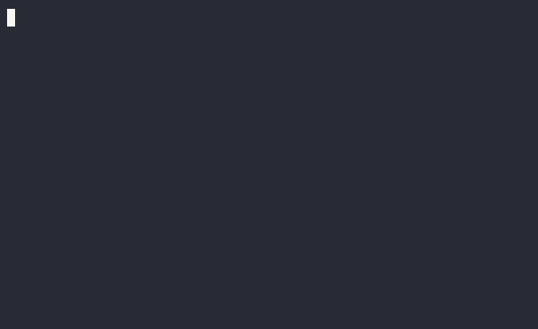

Raw HTTP Example #
In this class I will keep referring to the syntax for executing a "raw" HTTP command over the network. I really want folks to have a good gasp of how this relatively simple protocol works. It forms the basis for nearly all our interactions with servers and API calls.
HTTP vs HTTPS #
Before you can experiment with an HTTP command, you need to connect to a web server of some sort. However the very raw network connections we use to test with generally do not support encryption. They rely on the original plaintext HTTP connections over port 80. Finding valid websites to test against is getting harder, as the vast majority of all sites will force a redirection from http://... to https://... for connection attempts.
The wonderful example.com is maintained by iana.org, and is a really great resource for experimenting with HTTP commands, as well as being a "valid" example website and URL for all sorts of uses. Thankfully they still allow "plaintext" HTTP connections, and do not force upgrades to HTTPS for all connection attempts. Additionally, the Computer Science department's lectura server also supports plaintext HTTP connections still (at least as of Spring 2024). That's what we'll use for this demo.
netcat #
To create a raw TCP socket to a remote server, we'll use the netcat command line program: nc. If this program isn't present on your computer, you can either SSH to lectura and run it from there, or load up a Docker container to install it in, then run it from there.
nc -v [ip address or hostname] [port]
netcat Dockerfile #
If you're having trouble running nc somewhere, you can build your own docker image from the following Dockerfile. Create a new directory, and then create a new Dockerfile inside and copy the following into it. This Dockerfile will create an image based off of debian:bookworm with a few extra things installed already. All we need to do is install netcat.
FROM buildpack-deps:bookworm-curl
RUN set -eux; \
apt-get update; \
apt-get install -y --no-install-recommends \
netcat-traditional
Build and run it to get a bash shell, then run nc inside the container.
docker build csc346:netcat .
docker run -it --rm csc346:netcat bash
Example #
Here is a basic nc based example that requests the webpage from the following URL:
http://www2.cs.arizona.edu/courses/descriptions.html
First we need to connect to the host itself, which for this URL is www2.cs.arizona.edu. Since we're doing plaintext HTTP, we will connect on port 80.
nc -v www2.cs.arizona.edu 80
When we hit enter, we should get a connection response from nc saying we've established a connection. At that point you'll be at a blank line, and any text typed or pasted in here will be sent to the remote host when you hit the enter key.
It is at this point that we send our actual HTTP request.
GET /courses/descriptions.html HTTP/1.1
Host: www2.cs.arizona.edu
After typing in those two lines, the critical part is that you have to indicate to the server that you're done with the request, and that the server should process it and send back the response. The HTTP specification states that we do this by sending TWO CRLF sequences. When doing this interactively, this means you have to hit Return twice.
In the following animation, you can see that the server doesn't respond until the second Return happens following the Request.

Timeout #
If you don't send that second CRLF sequence, the server will just sit there waiting, and eventually time out.